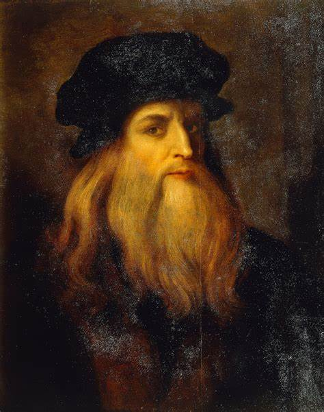

Welcome to the World of Arts
This website showcases a wide range of beautiful artworks from across the globe. It brings together various styles, techniques, and cultural influences. Each piece represents the creativity and passion of artists from different corners of the world. Through this collection, we celebrate the diversity and richness of artistic expression.
Among the countless contributors to the world of art, certain painters have risen to legendary status—celebrated not only for their technical mastery but for their ability to capture the essence of the human experience. From the delicate brushstrokes of the Renaissance to the bold abstractions of modernism, these artists have left an enduring mark on history. In the sections below, we highlight some of these iconic figures and explore the masterpieces that define their legacy.
Below is a curated selection of some of the most renowned painters in the history of art—masters whose works have shaped the course of artistic expression and continue to inspire generations around the world.
Leonardo da Vinci
Leonardo da Vinci was a painter, engineer, architect, inventor, and student of all things scientific. His natural genius crossed so many disciplines that he epitomized the term “ Renaissance man.”
Here are some of his arts:

The Last Supper
Leonardo da Vinci's The Last Supper is a famous mural painting created between 1495 and 1498. The painting depicts the dramatic moment when Jesus announces that one of his twelve apostles will betray him. Each figure's expression and body language conveys a range of emotions, from disbelief to anger to resignation.
Mona Lisa
Leonardo da Vinci’s Mona Lisa is one of the most famous portraits in the world, painted between 1503 and 1506. It features a woman with a mysterious expression and an enigmatic smile, seated against a hazy, dreamlike landscape. Housed in the Louvre Museum in Paris, the Mona Lisa is celebrated for its lifelike detail.
Ginevra de' Benci
Leonardo da Vinci’s Ginevra de’ Benci is an early portrait painted around 1474–1478, and it is one of his first major works. It depicts a young Florentine woman named Ginevra de’ Benci, shown with a calm, serious expression, seated before a juniper bush — a symbol of chastity and a play on her name (Ginepro in Italian).